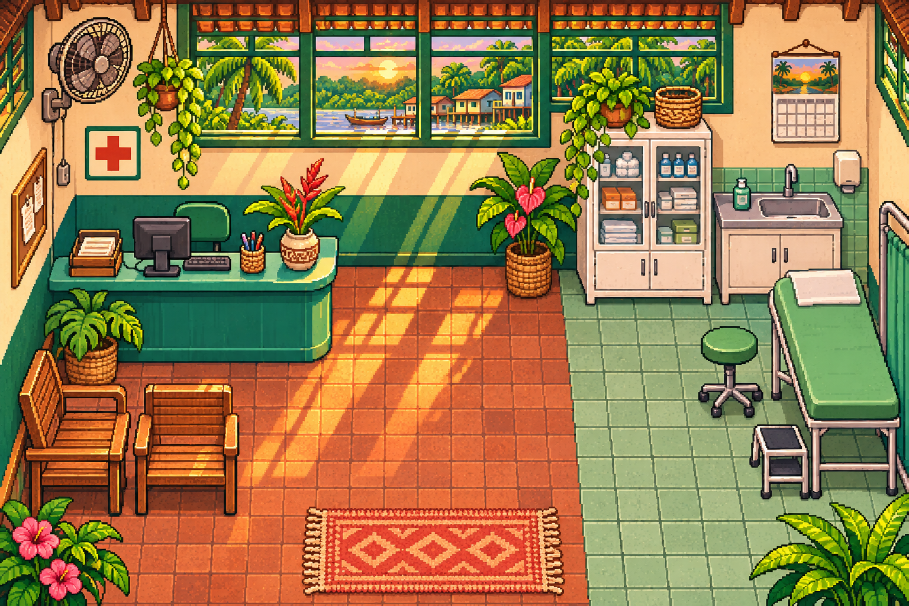

VILA MURICI · RPG CLÍNICO
Seu plantão vira aventura.
O tema escolhido muda os pacientes, a aula, a horta, o lago e a gruta. Simulação educacional com personagens fictícios, complementar à formação clínica.
VILA MURICI
A vila
Vila Murici
DIA DE PLANTÃOVILA MURICIPraça Central
WASD ou ↑↓←→ Mover E Interagir M Mapa Esc Menu
Use o direcional e o botão E, ou toque no chão para andar
NA VILAAnde pela vila: WASD ou setas, E para interagir, M para o mapa e Esc para o menu.
POSTO DE SAÚDE / PLANTÕES
Quadro de plantões.
UBS Vila Murici

RECEPÇÃO · CONSULTÓRIOPacientes da vila
PLANTÃO 001 / VILA MURICI
UBS Vila Murici
EM PLANTÃO
01 · UNIDADE DE SAÚDE
WASD ou ↑↓←→ Mover
Toque no chão para mover
E Interagir
Toque no marcador para interagir
OBJETIVO DO PLANTÃO
0/4